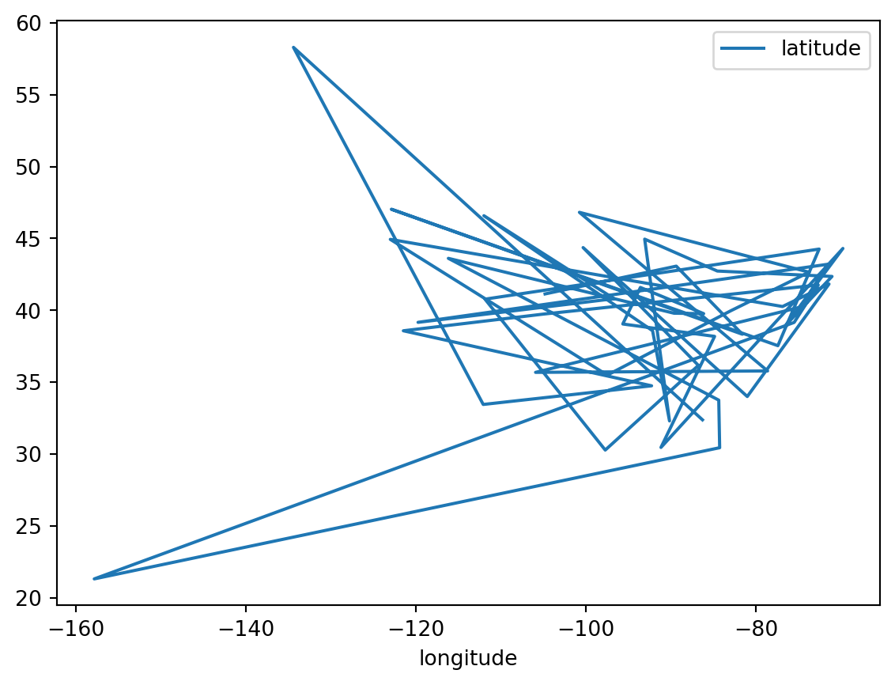

import pandas as pdIntroduction to Pandas
Introduction
In this notebook we introduce pandas (McKinney 2010) which is the main package for working with data in Python.
Import
We start by importing the package, and aliasing it as pd
Aliasing allows us to use pd in place of having to type out pandas in what follows.
DataFrame Creation
Pandas main data structure is called a DataFrame. We will create our first DataFrame by reading a csv file.
1home = "/home/serge"
cities_df = pd.read_csv(f"{home}/data/385/studio02/cities.csv")- 1
-
Change the value
hometo be equal tojupyter-studentwherestudentis your id.
Warning
Be sure to reread the instructions to change the path in the previous cell if you wish to follow along in your own notebook.
Asking for the values of the cities_df give us:
cities_df| name | description | latitude | longitude | |
|---|---|---|---|---|
| 0 | Alabama | Montgomery | 32.377716 | -86.300568 |
| 1 | Alaska | Juneau | 58.301598 | -134.420212 |
| 2 | Arizona | Phoenix | 33.448143 | -112.096962 |
| 3 | Arkansas | Little Rock | 34.746613 | -92.288986 |
| 4 | California | Sacramento | 38.576668 | -121.493629 |
| 5 | Colorado | Denver | 39.739227 | -104.984856 |
| 6 | Connecticut | Hartford<br> | 41.764046 | -72.682198 |
| 7 | Delaware | Dover | 39.157307 | -75.519722 |
| 8 | Hawaii | Honolulu | 21.307442 | -157.857376 |
| 9 | Florida | Tallahassee | 30.438118 | -84.281296 |
| 10 | Georgia | Atlanta<br> | 33.749027 | -84.388229 |
| 11 | Idaho | Boise | 43.617775 | -116.199722 |
| 12 | Illinois | Springfield | 39.798363 | -89.654961 |
| 13 | Indiana | Indianapolis | 39.768623 | -86.162643 |
| 14 | Iowa | Des Moines | 41.591087 | -93.603729 |
| 15 | Kansas | Topeka | 39.048191 | -95.677956 |
| 16 | Kentucky | Frankfort | 38.186722 | -84.875374 |
| 17 | Louisiana | Baton Rouge | 30.457069 | -91.187393 |
| 18 | Maine | Augusta | 44.307167 | -69.781693 |
| 19 | Maryland | Annapolis | 38.978764 | -76.490936 |
| 20 | Massachusetts | Boston | 42.358162 | -71.063698 |
| 21 | Michigan | Lansing | 42.733635 | -84.555328 |
| 22 | Minnesota | St. Paul | 44.955097 | -93.102211 |
| 23 | Mississippi | Jackson | 32.303848 | -90.182106 |
| 24 | Missouri | Jefferson City | 38.579201 | -92.172935 |
| 25 | Montana | Helena | 46.585709 | -112.018417 |
| 26 | Nebraska | Lincoln | 40.808075 | -96.699654 |
| 27 | Nevada | Carson City | 39.163914 | -119.766121 |
| 28 | New Hampshire | Concord | 43.206898 | -71.537994 |
| 29 | New Jersey | Trenton | 40.220596 | -74.769913 |
| 30 | New Mexico | Santa Fe | 35.682240 | -105.939728 |
| 31 | North Carolina | Raleigh | 35.780430 | -78.639099 |
| 32 | North Dakota | Bismarck | 46.820850 | -100.783318 |
| 33 | New York | Albany | 42.652843 | -73.757874 |
| 34 | Ohio | Columbus | 39.961346 | -82.999069 |
| 35 | Oklahoma | Oklahoma City | 35.492207 | -97.503342 |
| 36 | Oregon | Salem | 44.938461 | -123.030403 |
| 37 | Pennsylvania | Harrisburg | 40.264378 | -76.883598 |
| 38 | Rhode Island | Providence | 41.830914 | -71.414963 |
| 39 | South Carolina | Columbia | 34.000343 | -81.033211 |
| 40 | South Dakota | Pierre | 44.367031 | -100.346405 |
| 41 | Tennessee | Nashville | 36.165810 | -86.784241 |
| 42 | Texas | Austin | 30.274670 | -97.740349 |
| 43 | Utah | Salt Lake City | 40.777477 | -111.888237 |
| 44 | Vermont | Montpelier | 44.262436 | -72.580536 |
| 45 | Virginia | Richmond | 37.538857 | -77.433640 |
| 46 | Washington | Olympia | 47.035805 | -122.905014 |
| 47 | West Virginia | Charleston | 38.336246 | -81.612328 |
| 48 | Wisconsin | Madison | 43.074684 | -89.384445 |
| 49 | Wyoming | Cheyenne | 41.140259 | -104.820236 |
This data set is composed of the capital cities for the 50 states.
We can see what type of object cities_df is using type:
type(cities_df)pandas.core.frame.DataFrameAs an analogy, you can think of a DataFrame as a spreadsheet with rows and columns. This mental model will help to orient you. We will see that the DataFrame extends spreadsheets in powerful ways for data analysis.
A DataFrame, like most Python objects, has a number of attributes and methods.
Its shape attribute tells us how many observations and variables we have.
cities_df.shape(50, 4)In this case our data set has 50 observations on 4 variables.
Series
Each variable is stored as a Series:
type(cities_df.longitude)pandas.core.series.Seriescities_df.longitude0 -86.300568
1 -134.420212
2 -112.096962
3 -92.288986
4 -121.493629
5 -104.984856
6 -72.682198
7 -75.519722
8 -157.857376
9 -84.281296
10 -84.388229
11 -116.199722
12 -89.654961
13 -86.162643
14 -93.603729
15 -95.677956
16 -84.875374
17 -91.187393
18 -69.781693
19 -76.490936
20 -71.063698
21 -84.555328
22 -93.102211
23 -90.182106
24 -92.172935
25 -112.018417
26 -96.699654
27 -119.766121
28 -71.537994
29 -74.769913
30 -105.939728
31 -78.639099
32 -100.783318
33 -73.757874
34 -82.999069
35 -97.503342
36 -123.030403
37 -76.883598
38 -71.414963
39 -81.033211
40 -100.346405
41 -86.784241
42 -97.740349
43 -111.888237
44 -72.580536
45 -77.433640
46 -122.905014
47 -81.612328
48 -89.384445
49 -104.820236
Name: longitude, dtype: float64When we ask for the contents of the series, we see two columns of numbers. The first is a set of integers which is the index. Each value in the index locates the particular observation in the series.
The next column of values stores the values of the series. Here the values are decimal degrees of longitude for the capital cities.
Data Types
The info method of the DataFrame will summarize information about our DataFrame
cities_df.info()<class 'pandas.core.frame.DataFrame'>
RangeIndex: 50 entries, 0 to 49
Data columns (total 4 columns):
# Column Non-Null Count Dtype
--- ------ -------------- -----
0 name 50 non-null object
1 description 50 non-null object
2 latitude 50 non-null float64
3 longitude 50 non-null float64
dtypes: float64(2), object(2)
memory usage: 1.7+ KBWe have four columns, the first two of which are of type object and the last two are of type float64.
The names of our variables in the DataFrame are stored in the columns attribute:
cities_df.columnsIndex(['name', 'description', 'latitude', 'longitude'], dtype='object')We can use the column name to access the particular series:
cities_df.longitude0 -86.300568
1 -134.420212
2 -112.096962
3 -92.288986
4 -121.493629
5 -104.984856
6 -72.682198
7 -75.519722
8 -157.857376
9 -84.281296
10 -84.388229
11 -116.199722
12 -89.654961
13 -86.162643
14 -93.603729
15 -95.677956
16 -84.875374
17 -91.187393
18 -69.781693
19 -76.490936
20 -71.063698
21 -84.555328
22 -93.102211
23 -90.182106
24 -92.172935
25 -112.018417
26 -96.699654
27 -119.766121
28 -71.537994
29 -74.769913
30 -105.939728
31 -78.639099
32 -100.783318
33 -73.757874
34 -82.999069
35 -97.503342
36 -123.030403
37 -76.883598
38 -71.414963
39 -81.033211
40 -100.346405
41 -86.784241
42 -97.740349
43 -111.888237
44 -72.580536
45 -77.433640
46 -122.905014
47 -81.612328
48 -89.384445
49 -104.820236
Name: longitude, dtype: float64cities_df.name0 Alabama
1 Alaska
2 Arizona
3 Arkansas
4 California
5 Colorado
6 Connecticut
7 Delaware
8 Hawaii
9 Florida
10 Georgia
11 Idaho
12 Illinois
13 Indiana
14 Iowa
15 Kansas
16 Kentucky
17 Louisiana
18 Maine
19 Maryland
20 Massachusetts
21 Michigan
22 Minnesota
23 Mississippi
24 Missouri
25 Montana
26 Nebraska
27 Nevada
28 New Hampshire
29 New Jersey
30 New Mexico
31 North Carolina
32 North Dakota
33 New York
34 Ohio
35 Oklahoma
36 Oregon
37 Pennsylvania
38 Rhode Island
39 South Carolina
40 South Dakota
41 Tennessee
42 Texas
43 Utah
44 Vermont
45 Virginia
46 Washington
47 West Virginia
48 Wisconsin
49 Wyoming
Name: name, dtype: objectAs each series is an object, it too comes with attributes and methods:
cities_df.longitude.max()-69.781693cities_df.name.max()'Wyoming'cities_df.longitude.mean()-93.46593707999999cities_df.name.min()'Alabama'cities_df.longitude.describe()count 50.000000
mean -93.465937
std 18.669710
min -157.857376
25% -103.811006
50% -89.918533
75% -79.237627
max -69.781693
Name: longitude, dtype: float64cities_df.name.describe()count 50
unique 50
top Alabama
freq 1
Name: name, dtype: objectNote how the same method behaves for series of different types.
Creating new series
A common workflow in data analysis is to create, or derive, new variables based upon existing variables. For example, let’s define a variable that will denote whether a capital city is in the east or west of the country. Here we will use the median longitude as the comparison point:
cities_df.longitude.median()-89.9185335cities_df.longitude < cities_df.longitude.median()0 False
1 True
2 True
3 True
4 True
5 True
6 False
7 False
8 True
9 False
10 False
11 True
12 False
13 False
14 True
15 True
16 False
17 True
18 False
19 False
20 False
21 False
22 True
23 True
24 True
25 True
26 True
27 True
28 False
29 False
30 True
31 False
32 True
33 False
34 False
35 True
36 True
37 False
38 False
39 False
40 True
41 False
42 True
43 True
44 False
45 False
46 True
47 False
48 False
49 True
Name: longitude, dtype: boolThis creates a series that has data type bool, meaning True if the city is at a longitude less than that of the median longitude. False if it is east of that value. We can use this information to create a new series on the DataFrame called east:
cities_df['east'] = cities_df.longitude > cities_df.longitude.median()And, we can do this for a second variable south:
cities_df['south'] = cities_df.latitude < cities_df.latitude.median()Based on those two Boolean variables we can create an additional variable called region that tells us which of four regions the capital city is located in.
cities_df['region'] = 4 * cities_df.east * cities_df.south + 3 * (1 - cities_df.east) * cities_df.south \
+ 2 * (1-cities_df.east) * (1-cities_df.south) + cities_df.east * (1-cities_df.south)region takes on four values, 1 if the city is in the North East, 2 North West, 3 South West, and 4 South East.
cities_df.head(20)| name | description | latitude | longitude | east | south | region | |
|---|---|---|---|---|---|---|---|
| 0 | Alabama | Montgomery | 32.377716 | -86.300568 | True | True | 4 |
| 1 | Alaska | Juneau | 58.301598 | -134.420212 | False | False | 2 |
| 2 | Arizona | Phoenix | 33.448143 | -112.096962 | False | True | 3 |
| 3 | Arkansas | Little Rock | 34.746613 | -92.288986 | False | True | 3 |
| 4 | California | Sacramento | 38.576668 | -121.493629 | False | True | 3 |
| 5 | Colorado | Denver | 39.739227 | -104.984856 | False | True | 3 |
| 6 | Connecticut | Hartford<br> | 41.764046 | -72.682198 | True | False | 1 |
| 7 | Delaware | Dover | 39.157307 | -75.519722 | True | True | 4 |
| 8 | Hawaii | Honolulu | 21.307442 | -157.857376 | False | True | 3 |
| 9 | Florida | Tallahassee | 30.438118 | -84.281296 | True | True | 4 |
| 10 | Georgia | Atlanta<br> | 33.749027 | -84.388229 | True | True | 4 |
| 11 | Idaho | Boise | 43.617775 | -116.199722 | False | False | 2 |
| 12 | Illinois | Springfield | 39.798363 | -89.654961 | True | False | 1 |
| 13 | Indiana | Indianapolis | 39.768623 | -86.162643 | True | True | 4 |
| 14 | Iowa | Des Moines | 41.591087 | -93.603729 | False | False | 2 |
| 15 | Kansas | Topeka | 39.048191 | -95.677956 | False | True | 3 |
| 16 | Kentucky | Frankfort | 38.186722 | -84.875374 | True | True | 4 |
| 17 | Louisiana | Baton Rouge | 30.457069 | -91.187393 | False | True | 3 |
| 18 | Maine | Augusta | 44.307167 | -69.781693 | True | False | 1 |
| 19 | Maryland | Annapolis | 38.978764 | -76.490936 | True | True | 4 |
Plotting
Pandas comes with built-in plotting facilities. We can try out the default plot method:
cities_df.plot('longitude', 'latitude')
This isn’t quite what we want as the default is to plot the first series and the second series together with line segments connecting each pair of sequential observations.
But we can try a different method to get what we want:
cities_df.plot.scatter('longitude', 'latitude')
That’s better as now we see the cities represented as points.
Warning
We are treating longitude and latitude as Cartesian coordinates in the plots. This is technically not correct as they are spherical coordinates. We will correct this later on in the course when we get to spatial data analysis proper.
There are a number of powerful visualization packages in Python that allow us to go beyond what is available in Pandas. To see one of them here, we import seaborn
import seaborn as sbnand redo our plot:
sbn.scatterplot(cities_df, x='longitude', y='latitude');So far, not much difference from what we did with pandas. But we can specify a hue variable to distinguish what region the cities are in:
sbn.scatterplot(cities_df, x='longitude', y='latitude', hue='region');Great. But the numbers on the legend are not that informative. Let’s change them:
cities_df.region.map({1:'NE', 2:'NW', 3:'SW', 4:'SE'})0 SE
1 NW
2 SW
3 SW
4 SW
5 SW
6 NE
7 SE
8 SW
9 SE
10 SE
11 NW
12 NE
13 SE
14 NW
15 SW
16 SE
17 SW
18 NE
19 SE
20 NE
21 NE
22 NW
23 SW
24 SW
25 NW
26 NW
27 SW
28 NE
29 NE
30 SW
31 SE
32 NW
33 NE
34 NE
35 SW
36 NW
37 NE
38 NE
39 SE
40 NW
41 SE
42 SW
43 NW
44 NE
45 SE
46 NW
47 SE
48 NE
49 NW
Name: region, dtype: objectcities_df['region'] = cities_df.region.map({1:'NE', 2:'NW', 3:'SW', 4:'SE'})sbn.scatterplot(cities_df, x='longitude', y='latitude', hue='region');Much better.
cities_df.head()| name | description | latitude | longitude | east | south | region | |
|---|---|---|---|---|---|---|---|
| 0 | Alabama | Montgomery | 32.377716 | -86.300568 | True | True | SE |
| 1 | Alaska | Juneau | 58.301598 | -134.420212 | False | False | NW |
| 2 | Arizona | Phoenix | 33.448143 | -112.096962 | False | True | SW |
| 3 | Arkansas | Little Rock | 34.746613 | -92.288986 | False | True | SW |
| 4 | California | Sacramento | 38.576668 | -121.493629 | False | True | SW |
DataFrame Operations
Pandas has a number of powerful methods that allow us to manipulate the DataFrame in interesting ways. Here we look at three:
- sorting
- grouping
- filtering
Sorting
We can sort the DataFrame by the values of a given column. For example, to find the southern-most capital city:
cities_df.sort_values(by='latitude')| name | description | latitude | longitude | east | south | region | |
|---|---|---|---|---|---|---|---|
| 8 | Hawaii | Honolulu | 21.307442 | -157.857376 | False | True | SW |
| 42 | Texas | Austin | 30.274670 | -97.740349 | False | True | SW |
| 9 | Florida | Tallahassee | 30.438118 | -84.281296 | True | True | SE |
| 17 | Louisiana | Baton Rouge | 30.457069 | -91.187393 | False | True | SW |
| 23 | Mississippi | Jackson | 32.303848 | -90.182106 | False | True | SW |
| 0 | Alabama | Montgomery | 32.377716 | -86.300568 | True | True | SE |
| 2 | Arizona | Phoenix | 33.448143 | -112.096962 | False | True | SW |
| 10 | Georgia | Atlanta<br> | 33.749027 | -84.388229 | True | True | SE |
| 39 | South Carolina | Columbia | 34.000343 | -81.033211 | True | True | SE |
| 3 | Arkansas | Little Rock | 34.746613 | -92.288986 | False | True | SW |
| 35 | Oklahoma | Oklahoma City | 35.492207 | -97.503342 | False | True | SW |
| 30 | New Mexico | Santa Fe | 35.682240 | -105.939728 | False | True | SW |
| 31 | North Carolina | Raleigh | 35.780430 | -78.639099 | True | True | SE |
| 41 | Tennessee | Nashville | 36.165810 | -86.784241 | True | True | SE |
| 45 | Virginia | Richmond | 37.538857 | -77.433640 | True | True | SE |
| 16 | Kentucky | Frankfort | 38.186722 | -84.875374 | True | True | SE |
| 47 | West Virginia | Charleston | 38.336246 | -81.612328 | True | True | SE |
| 4 | California | Sacramento | 38.576668 | -121.493629 | False | True | SW |
| 24 | Missouri | Jefferson City | 38.579201 | -92.172935 | False | True | SW |
| 19 | Maryland | Annapolis | 38.978764 | -76.490936 | True | True | SE |
| 15 | Kansas | Topeka | 39.048191 | -95.677956 | False | True | SW |
| 7 | Delaware | Dover | 39.157307 | -75.519722 | True | True | SE |
| 27 | Nevada | Carson City | 39.163914 | -119.766121 | False | True | SW |
| 5 | Colorado | Denver | 39.739227 | -104.984856 | False | True | SW |
| 13 | Indiana | Indianapolis | 39.768623 | -86.162643 | True | True | SE |
| 12 | Illinois | Springfield | 39.798363 | -89.654961 | True | False | NE |
| 34 | Ohio | Columbus | 39.961346 | -82.999069 | True | False | NE |
| 29 | New Jersey | Trenton | 40.220596 | -74.769913 | True | False | NE |
| 37 | Pennsylvania | Harrisburg | 40.264378 | -76.883598 | True | False | NE |
| 43 | Utah | Salt Lake City | 40.777477 | -111.888237 | False | False | NW |
| 26 | Nebraska | Lincoln | 40.808075 | -96.699654 | False | False | NW |
| 49 | Wyoming | Cheyenne | 41.140259 | -104.820236 | False | False | NW |
| 14 | Iowa | Des Moines | 41.591087 | -93.603729 | False | False | NW |
| 6 | Connecticut | Hartford<br> | 41.764046 | -72.682198 | True | False | NE |
| 38 | Rhode Island | Providence | 41.830914 | -71.414963 | True | False | NE |
| 20 | Massachusetts | Boston | 42.358162 | -71.063698 | True | False | NE |
| 33 | New York | Albany | 42.652843 | -73.757874 | True | False | NE |
| 21 | Michigan | Lansing | 42.733635 | -84.555328 | True | False | NE |
| 48 | Wisconsin | Madison | 43.074684 | -89.384445 | True | False | NE |
| 28 | New Hampshire | Concord | 43.206898 | -71.537994 | True | False | NE |
| 11 | Idaho | Boise | 43.617775 | -116.199722 | False | False | NW |
| 44 | Vermont | Montpelier | 44.262436 | -72.580536 | True | False | NE |
| 18 | Maine | Augusta | 44.307167 | -69.781693 | True | False | NE |
| 40 | South Dakota | Pierre | 44.367031 | -100.346405 | False | False | NW |
| 36 | Oregon | Salem | 44.938461 | -123.030403 | False | False | NW |
| 22 | Minnesota | St. Paul | 44.955097 | -93.102211 | False | False | NW |
| 25 | Montana | Helena | 46.585709 | -112.018417 | False | False | NW |
| 32 | North Dakota | Bismarck | 46.820850 | -100.783318 | False | False | NW |
| 46 | Washington | Olympia | 47.035805 | -122.905014 | False | False | NW |
| 1 | Alaska | Juneau | 58.301598 | -134.420212 | False | False | NW |
To find the northern-most city:
cities_df.sort_values(by='latitude', ascending=False)| name | description | latitude | longitude | east | south | region | |
|---|---|---|---|---|---|---|---|
| 1 | Alaska | Juneau | 58.301598 | -134.420212 | False | False | NW |
| 46 | Washington | Olympia | 47.035805 | -122.905014 | False | False | NW |
| 32 | North Dakota | Bismarck | 46.820850 | -100.783318 | False | False | NW |
| 25 | Montana | Helena | 46.585709 | -112.018417 | False | False | NW |
| 22 | Minnesota | St. Paul | 44.955097 | -93.102211 | False | False | NW |
| 36 | Oregon | Salem | 44.938461 | -123.030403 | False | False | NW |
| 40 | South Dakota | Pierre | 44.367031 | -100.346405 | False | False | NW |
| 18 | Maine | Augusta | 44.307167 | -69.781693 | True | False | NE |
| 44 | Vermont | Montpelier | 44.262436 | -72.580536 | True | False | NE |
| 11 | Idaho | Boise | 43.617775 | -116.199722 | False | False | NW |
| 28 | New Hampshire | Concord | 43.206898 | -71.537994 | True | False | NE |
| 48 | Wisconsin | Madison | 43.074684 | -89.384445 | True | False | NE |
| 21 | Michigan | Lansing | 42.733635 | -84.555328 | True | False | NE |
| 33 | New York | Albany | 42.652843 | -73.757874 | True | False | NE |
| 20 | Massachusetts | Boston | 42.358162 | -71.063698 | True | False | NE |
| 38 | Rhode Island | Providence | 41.830914 | -71.414963 | True | False | NE |
| 6 | Connecticut | Hartford<br> | 41.764046 | -72.682198 | True | False | NE |
| 14 | Iowa | Des Moines | 41.591087 | -93.603729 | False | False | NW |
| 49 | Wyoming | Cheyenne | 41.140259 | -104.820236 | False | False | NW |
| 26 | Nebraska | Lincoln | 40.808075 | -96.699654 | False | False | NW |
| 43 | Utah | Salt Lake City | 40.777477 | -111.888237 | False | False | NW |
| 37 | Pennsylvania | Harrisburg | 40.264378 | -76.883598 | True | False | NE |
| 29 | New Jersey | Trenton | 40.220596 | -74.769913 | True | False | NE |
| 34 | Ohio | Columbus | 39.961346 | -82.999069 | True | False | NE |
| 12 | Illinois | Springfield | 39.798363 | -89.654961 | True | False | NE |
| 13 | Indiana | Indianapolis | 39.768623 | -86.162643 | True | True | SE |
| 5 | Colorado | Denver | 39.739227 | -104.984856 | False | True | SW |
| 27 | Nevada | Carson City | 39.163914 | -119.766121 | False | True | SW |
| 7 | Delaware | Dover | 39.157307 | -75.519722 | True | True | SE |
| 15 | Kansas | Topeka | 39.048191 | -95.677956 | False | True | SW |
| 19 | Maryland | Annapolis | 38.978764 | -76.490936 | True | True | SE |
| 24 | Missouri | Jefferson City | 38.579201 | -92.172935 | False | True | SW |
| 4 | California | Sacramento | 38.576668 | -121.493629 | False | True | SW |
| 47 | West Virginia | Charleston | 38.336246 | -81.612328 | True | True | SE |
| 16 | Kentucky | Frankfort | 38.186722 | -84.875374 | True | True | SE |
| 45 | Virginia | Richmond | 37.538857 | -77.433640 | True | True | SE |
| 41 | Tennessee | Nashville | 36.165810 | -86.784241 | True | True | SE |
| 31 | North Carolina | Raleigh | 35.780430 | -78.639099 | True | True | SE |
| 30 | New Mexico | Santa Fe | 35.682240 | -105.939728 | False | True | SW |
| 35 | Oklahoma | Oklahoma City | 35.492207 | -97.503342 | False | True | SW |
| 3 | Arkansas | Little Rock | 34.746613 | -92.288986 | False | True | SW |
| 39 | South Carolina | Columbia | 34.000343 | -81.033211 | True | True | SE |
| 10 | Georgia | Atlanta<br> | 33.749027 | -84.388229 | True | True | SE |
| 2 | Arizona | Phoenix | 33.448143 | -112.096962 | False | True | SW |
| 0 | Alabama | Montgomery | 32.377716 | -86.300568 | True | True | SE |
| 23 | Mississippi | Jackson | 32.303848 | -90.182106 | False | True | SW |
| 17 | Louisiana | Baton Rouge | 30.457069 | -91.187393 | False | True | SW |
| 9 | Florida | Tallahassee | 30.438118 | -84.281296 | True | True | SE |
| 42 | Texas | Austin | 30.274670 | -97.740349 | False | True | SW |
| 8 | Hawaii | Honolulu | 21.307442 | -157.857376 | False | True | SW |
If we don’t want to see all the other columns, we can subset the dataframe first:
cities_df[['name', 'description', 'latitude']].sort_values(by='latitude', ascending=False)| name | description | latitude | |
|---|---|---|---|
| 1 | Alaska | Juneau | 58.301598 |
| 46 | Washington | Olympia | 47.035805 |
| 32 | North Dakota | Bismarck | 46.820850 |
| 25 | Montana | Helena | 46.585709 |
| 22 | Minnesota | St. Paul | 44.955097 |
| 36 | Oregon | Salem | 44.938461 |
| 40 | South Dakota | Pierre | 44.367031 |
| 18 | Maine | Augusta | 44.307167 |
| 44 | Vermont | Montpelier | 44.262436 |
| 11 | Idaho | Boise | 43.617775 |
| 28 | New Hampshire | Concord | 43.206898 |
| 48 | Wisconsin | Madison | 43.074684 |
| 21 | Michigan | Lansing | 42.733635 |
| 33 | New York | Albany | 42.652843 |
| 20 | Massachusetts | Boston | 42.358162 |
| 38 | Rhode Island | Providence | 41.830914 |
| 6 | Connecticut | Hartford<br> | 41.764046 |
| 14 | Iowa | Des Moines | 41.591087 |
| 49 | Wyoming | Cheyenne | 41.140259 |
| 26 | Nebraska | Lincoln | 40.808075 |
| 43 | Utah | Salt Lake City | 40.777477 |
| 37 | Pennsylvania | Harrisburg | 40.264378 |
| 29 | New Jersey | Trenton | 40.220596 |
| 34 | Ohio | Columbus | 39.961346 |
| 12 | Illinois | Springfield | 39.798363 |
| 13 | Indiana | Indianapolis | 39.768623 |
| 5 | Colorado | Denver | 39.739227 |
| 27 | Nevada | Carson City | 39.163914 |
| 7 | Delaware | Dover | 39.157307 |
| 15 | Kansas | Topeka | 39.048191 |
| 19 | Maryland | Annapolis | 38.978764 |
| 24 | Missouri | Jefferson City | 38.579201 |
| 4 | California | Sacramento | 38.576668 |
| 47 | West Virginia | Charleston | 38.336246 |
| 16 | Kentucky | Frankfort | 38.186722 |
| 45 | Virginia | Richmond | 37.538857 |
| 41 | Tennessee | Nashville | 36.165810 |
| 31 | North Carolina | Raleigh | 35.780430 |
| 30 | New Mexico | Santa Fe | 35.682240 |
| 35 | Oklahoma | Oklahoma City | 35.492207 |
| 3 | Arkansas | Little Rock | 34.746613 |
| 39 | South Carolina | Columbia | 34.000343 |
| 10 | Georgia | Atlanta<br> | 33.749027 |
| 2 | Arizona | Phoenix | 33.448143 |
| 0 | Alabama | Montgomery | 32.377716 |
| 23 | Mississippi | Jackson | 32.303848 |
| 17 | Louisiana | Baton Rouge | 30.457069 |
| 9 | Florida | Tallahassee | 30.438118 |
| 42 | Texas | Austin | 30.274670 |
| 8 | Hawaii | Honolulu | 21.307442 |
Grouping
The groupby method of the DataFrame allows us to split the dataframe, apply a function, and combine the results. This allows us to group data in interesting ways.
Suppose we wanted to know how many cities were in the east and west?
cities_df.groupby(by='east').count()| name | description | latitude | longitude | south | region | |
|---|---|---|---|---|---|---|
| east | ||||||
| False | 25 | 25 | 25 | 25 | 25 | 25 |
| True | 25 | 25 | 25 | 25 | 25 | 25 |
And for south and north:
cities_df.groupby(by='south').count()| name | description | latitude | longitude | east | region | |
|---|---|---|---|---|---|---|
| south | ||||||
| False | 25 | 25 | 25 | 25 | 25 | 25 |
| True | 25 | 25 | 25 | 25 | 25 | 25 |
How about by region?
cities_df.groupby(by='region').count()| name | description | latitude | longitude | east | south | |
|---|---|---|---|---|---|---|
| region | ||||||
| NE | 13 | 13 | 13 | 13 | 13 | 13 |
| NW | 12 | 12 | 12 | 12 | 12 | 12 |
| SE | 12 | 12 | 12 | 12 | 12 | 12 |
| SW | 13 | 13 | 13 | 13 | 13 | 13 |
Note
As we will see later in the course, there are different notions of a spatial median. This will unravel the mystery of why we have equal numbers of cities in the north and south, and east and west, but not in the four regions.
In addition to applying the count method on the groubby object, we could use other functions. For example, we may want to know the median coordinate values in each of the four regions:
cities_df[['region', 'longitude', 'latitude']].groupby(by='region').median()| longitude | latitude | |
|---|---|---|
| region | ||
| NE | -73.757874 | 42.358162 |
| NW | -108.354236 | 44.652746 |
| SE | -82.946812 | 36.852334 |
| SW | -97.740349 | 35.492207 |
Filtering
Filtering allows us to subset the DataFrame based on some conditions. For example, what if we wanted to create a new DataFrame that only contained the southern capital cities:
south_df = cities_df[cities_df.south]south_df.shape(25, 7)south_df.head()| name | description | latitude | longitude | east | south | region | |
|---|---|---|---|---|---|---|---|
| 0 | Alabama | Montgomery | 32.377716 | -86.300568 | True | True | SE |
| 2 | Arizona | Phoenix | 33.448143 | -112.096962 | False | True | SW |
| 3 | Arkansas | Little Rock | 34.746613 | -92.288986 | False | True | SW |
| 4 | California | Sacramento | 38.576668 | -121.493629 | False | True | SW |
| 5 | Colorado | Denver | 39.739227 | -104.984856 | False | True | SW |
And to get a DataFrame for the northern cities, we could use a complement filter:
north_df = cities_df[~cities_df.south]The ~ operator can be thought of flipping the boolean condition.
north_df.head()| name | description | latitude | longitude | east | south | region | |
|---|---|---|---|---|---|---|---|
| 1 | Alaska | Juneau | 58.301598 | -134.420212 | False | False | NW |
| 6 | Connecticut | Hartford<br> | 41.764046 | -72.682198 | True | False | NE |
| 11 | Idaho | Boise | 43.617775 | -116.199722 | False | False | NW |
| 12 | Illinois | Springfield | 39.798363 | -89.654961 | True | False | NE |
| 14 | Iowa | Des Moines | 41.591087 | -93.603729 | False | False | NW |
We could combine these to get the DataFrame for cities in the North East region:
ne_df = cities_df[~cities_df.south & cities_df.east]ne_df.head()| name | description | latitude | longitude | east | south | region | |
|---|---|---|---|---|---|---|---|
| 6 | Connecticut | Hartford<br> | 41.764046 | -72.682198 | True | False | NE |
| 12 | Illinois | Springfield | 39.798363 | -89.654961 | True | False | NE |
| 18 | Maine | Augusta | 44.307167 | -69.781693 | True | False | NE |
| 20 | Massachusetts | Boston | 42.358162 | -71.063698 | True | False | NE |
| 21 | Michigan | Lansing | 42.733635 | -84.555328 | True | False | NE |
Like most things we will want to do, there are typically multiple ways to accomplish this in Python. Here we can get a set of regional DataFrames in one shot:
dfs = {r:data for r, data in cities_df.groupby('region')}dfs{'NE': name description latitude longitude east south region
6 Connecticut Hartford<br> 41.764046 -72.682198 True False NE
12 Illinois Springfield 39.798363 -89.654961 True False NE
18 Maine Augusta 44.307167 -69.781693 True False NE
20 Massachusetts Boston 42.358162 -71.063698 True False NE
21 Michigan Lansing 42.733635 -84.555328 True False NE
28 New Hampshire Concord 43.206898 -71.537994 True False NE
29 New Jersey Trenton 40.220596 -74.769913 True False NE
33 New York Albany 42.652843 -73.757874 True False NE
34 Ohio Columbus 39.961346 -82.999069 True False NE
37 Pennsylvania Harrisburg 40.264378 -76.883598 True False NE
38 Rhode Island Providence 41.830914 -71.414963 True False NE
44 Vermont Montpelier 44.262436 -72.580536 True False NE
48 Wisconsin Madison 43.074684 -89.384445 True False NE,
'NW': name description latitude longitude east south region
1 Alaska Juneau 58.301598 -134.420212 False False NW
11 Idaho Boise 43.617775 -116.199722 False False NW
14 Iowa Des Moines 41.591087 -93.603729 False False NW
22 Minnesota St. Paul 44.955097 -93.102211 False False NW
25 Montana Helena 46.585709 -112.018417 False False NW
26 Nebraska Lincoln 40.808075 -96.699654 False False NW
32 North Dakota Bismarck 46.820850 -100.783318 False False NW
36 Oregon Salem 44.938461 -123.030403 False False NW
40 South Dakota Pierre 44.367031 -100.346405 False False NW
43 Utah Salt Lake City 40.777477 -111.888237 False False NW
46 Washington Olympia 47.035805 -122.905014 False False NW
49 Wyoming Cheyenne 41.140259 -104.820236 False False NW,
'SE': name description latitude longitude east south region
0 Alabama Montgomery 32.377716 -86.300568 True True SE
7 Delaware Dover 39.157307 -75.519722 True True SE
9 Florida Tallahassee 30.438118 -84.281296 True True SE
10 Georgia Atlanta<br> 33.749027 -84.388229 True True SE
13 Indiana Indianapolis 39.768623 -86.162643 True True SE
16 Kentucky Frankfort 38.186722 -84.875374 True True SE
19 Maryland Annapolis 38.978764 -76.490936 True True SE
31 North Carolina Raleigh 35.780430 -78.639099 True True SE
39 South Carolina Columbia 34.000343 -81.033211 True True SE
41 Tennessee Nashville 36.165810 -86.784241 True True SE
45 Virginia Richmond 37.538857 -77.433640 True True SE
47 West Virginia Charleston 38.336246 -81.612328 True True SE,
'SW': name description latitude longitude east south region
2 Arizona Phoenix 33.448143 -112.096962 False True SW
3 Arkansas Little Rock 34.746613 -92.288986 False True SW
4 California Sacramento 38.576668 -121.493629 False True SW
5 Colorado Denver 39.739227 -104.984856 False True SW
8 Hawaii Honolulu 21.307442 -157.857376 False True SW
15 Kansas Topeka 39.048191 -95.677956 False True SW
17 Louisiana Baton Rouge 30.457069 -91.187393 False True SW
23 Mississippi Jackson 32.303848 -90.182106 False True SW
24 Missouri Jefferson City 38.579201 -92.172935 False True SW
27 Nevada Carson City 39.163914 -119.766121 False True SW
30 New Mexico Santa Fe 35.682240 -105.939728 False True SW
35 Oklahoma Oklahoma City 35.492207 -97.503342 False True SW
42 Texas Austin 30.274670 -97.740349 False True SW}They are stored in a dictionary, so we could access each one using the region ‘key’.
dfs['NE'].head()| name | description | latitude | longitude | east | south | region | |
|---|---|---|---|---|---|---|---|
| 6 | Connecticut | Hartford<br> | 41.764046 | -72.682198 | True | False | NE |
| 12 | Illinois | Springfield | 39.798363 | -89.654961 | True | False | NE |
| 18 | Maine | Augusta | 44.307167 | -69.781693 | True | False | NE |
| 20 | Massachusetts | Boston | 42.358162 | -71.063698 | True | False | NE |
| 21 | Michigan | Lansing | 42.733635 | -84.555328 | True | False | NE |
Merge
A common workflow in spatial analysis is combining different data sets. Often we will have information on the locations or geographical coordinates in one data set, but that data set may not include any substantive attribute information. We may have a second data set that has the attribute information we are interested in, but this second data set lacks geographical coordinates. So we will have cause to merge the two data sets
population_df = pd.read_csv(f"{home}/data/385/studio02/captial_population.csv")population_df.head()| State | Capital | Since | Area | CityPop | MSAPop | CSAPop | rank_in_state | area | |
|---|---|---|---|---|---|---|---|---|---|
| 0 | Alabama | Montgomery | 1846 | 159.8 sq mi (414 km2) | 200603 | 386047 | 476207.0 | 3 | 159.8 |
| 1 | Alaska | Juneau | 1906 | 2,716.7 sq mi (7,036 km2) | 32255 | 32255 | NaN | 3 | 2716.7 |
| 2 | Arizona | Phoenix | 1889 | 517.6 sq mi (1,341 km2) | 1608139 | 4845832 | 4899104.0 | 1 | 517.6 |
| 3 | Arkansas | Little Rock | 1821 | 116.2 sq mi (301 km2) | 202591 | 748031 | 912604.0 | 1 | 116.2 |
| 4 | California | Sacramento | 1854 | 97.9 sq mi (254 km2) | 524943 | 2397382 | 2680831.0 | 6 | 97.9 |
merged = pd.merge(cities_df, population_df, left_on='name', right_on='State')merged.head()| name | description | latitude | longitude | east | south | region | State | Capital | Since | Area | CityPop | MSAPop | CSAPop | rank_in_state | area | |
|---|---|---|---|---|---|---|---|---|---|---|---|---|---|---|---|---|
| 0 | Alabama | Montgomery | 32.377716 | -86.300568 | True | True | SE | Alabama | Montgomery | 1846 | 159.8 sq mi (414 km2) | 200603 | 386047 | 476207.0 | 3 | 159.8 |
| 1 | Alaska | Juneau | 58.301598 | -134.420212 | False | False | NW | Alaska | Juneau | 1906 | 2,716.7 sq mi (7,036 km2) | 32255 | 32255 | NaN | 3 | 2716.7 |
| 2 | Arizona | Phoenix | 33.448143 | -112.096962 | False | True | SW | Arizona | Phoenix | 1889 | 517.6 sq mi (1,341 km2) | 1608139 | 4845832 | 4899104.0 | 1 | 517.6 |
| 3 | Arkansas | Little Rock | 34.746613 | -92.288986 | False | True | SW | Arkansas | Little Rock | 1821 | 116.2 sq mi (301 km2) | 202591 | 748031 | 912604.0 | 1 | 116.2 |
| 4 | California | Sacramento | 38.576668 | -121.493629 | False | True | SW | California | Sacramento | 1854 | 97.9 sq mi (254 km2) | 524943 | 2397382 | 2680831.0 | 6 | 97.9 |
merged.shape(50, 16)merged = pd.merge(cities_df, population_df[['CityPop', 'rank_in_state', 'area', 'State']], left_on='name', right_on='State')merged.shape(50, 11)Saving Files
In addition to reading data files, as we did at the beginning of this session, pandas can also create files to save to disk. It is very useful to separate your more complicated data analysis workflows into stages. Typically, the earlier stages will involve data reading, creation of new variables, and or merging different data sets. Much like we have done here. Subsequent steps would be analyzing the data that we have just constructed.
We do not want to have to repeat the data processing steps each time we need to carry out the analysis. To avoid this, we have our data processing notebooks save the newly created data to external files. This way the analysis notebooks only have to read these newly created files - we do not have to recreate them.
Let’s save our latest DataFrame to a csv so we can use it again later.
merged.to_csv("merged.csv", index=False)We can show that the merge above will work irrespective of order.
merged.sort_values(by='description')| name | description | latitude | longitude | east | south | region | CityPop | rank_in_state | area | State | |
|---|---|---|---|---|---|---|---|---|---|---|---|
| 33 | New York | Albany | 42.652843 | -73.757874 | True | False | NE | 99224 | 6 | 21.40 | New York |
| 19 | Maryland | Annapolis | 38.978764 | -76.490936 | True | True | SE | 40812 | 7 | 6.73 | Maryland |
| 10 | Georgia | Atlanta<br> | 33.749027 | -84.388229 | True | True | SE | 498715 | 1 | 133.50 | Georgia |
| 18 | Maine | Augusta | 44.307167 | -69.781693 | True | False | NE | 18899 | 10 | 55.40 | Maine |
| 42 | Texas | Austin | 30.274670 | -97.740349 | False | True | SW | 961855 | 4 | 305.10 | Texas |
| 17 | Louisiana | Baton Rouge | 30.457069 | -91.187393 | False | True | SW | 227470 | 2 | 76.80 | Louisiana |
| 32 | North Dakota | Bismarck | 46.820850 | -100.783318 | False | False | NW | 73622 | 2 | 26.90 | North Dakota |
| 11 | Idaho | Boise | 43.617775 | -116.199722 | False | False | NW | 235684 | 1 | 63.80 | Idaho |
| 20 | Massachusetts | Boston | 42.358162 | -71.063698 | True | False | NE | 675647 | 1 | 89.60 | Massachusetts |
| 27 | Nevada | Carson City | 39.163914 | -119.766121 | False | True | SW | 58639 | 6 | 143.40 | Nevada |
| 47 | West Virginia | Charleston | 38.336246 | -81.612328 | True | True | SE | 48864 | 1 | 31.60 | West Virginia |
| 49 | Wyoming | Cheyenne | 41.140259 | -104.820236 | False | False | NW | 65132 | 1 | 21.10 | Wyoming |
| 39 | South Carolina | Columbia | 34.000343 | -81.033211 | True | True | SE | 136632 | 2 | 125.20 | South Carolina |
| 34 | Ohio | Columbus | 39.961346 | -82.999069 | True | False | NE | 905748 | 1 | 210.30 | Ohio |
| 28 | New Hampshire | Concord | 43.206898 | -71.537994 | True | False | NE | 43976 | 3 | 64.30 | New Hampshire |
| 5 | Colorado | Denver | 39.739227 | -104.984856 | False | True | SW | 715522 | 1 | 153.30 | Colorado |
| 14 | Iowa | Des Moines | 41.591087 | -93.603729 | False | False | NW | 214133 | 1 | 75.80 | Iowa |
| 7 | Delaware | Dover | 39.157307 | -75.519722 | True | True | SE | 39403 | 2 | 22.40 | Delaware |
| 16 | Kentucky | Frankfort | 38.186722 | -84.875374 | True | True | SE | 28602 | 15 | 14.70 | Kentucky |
| 37 | Pennsylvania | Harrisburg | 40.264378 | -76.883598 | True | False | NE | 50099 | 9 | 8.11 | Pennsylvania |
| 6 | Connecticut | Hartford<br> | 41.764046 | -72.682198 | True | False | NE | 121054 | 4 | 17.30 | Connecticut |
| 25 | Montana | Helena | 46.585709 | -112.018417 | False | False | NW | 32091 | 6 | 14.00 | Montana |
| 8 | Hawaii | Honolulu | 21.307442 | -157.857376 | False | True | SW | 350964 | 1 | 68.40 | Hawaii |
| 13 | Indiana | Indianapolis | 39.768623 | -86.162643 | True | True | SE | 887642 | 1 | 361.50 | Indiana |
| 23 | Mississippi | Jackson | 32.303848 | -90.182106 | False | True | SW | 153701 | 1 | 104.90 | Mississippi |
| 24 | Missouri | Jefferson City | 38.579201 | -92.172935 | False | True | SW | 43228 | 15 | 27.30 | Missouri |
| 1 | Alaska | Juneau | 58.301598 | -134.420212 | False | False | NW | 32255 | 3 | 2716.70 | Alaska |
| 21 | Michigan | Lansing | 42.733635 | -84.555328 | True | False | NE | 112644 | 5 | 35.00 | Michigan |
| 26 | Nebraska | Lincoln | 40.808075 | -96.699654 | False | False | NW | 291082 | 2 | 74.60 | Nebraska |
| 3 | Arkansas | Little Rock | 34.746613 | -92.288986 | False | True | SW | 202591 | 1 | 116.20 | Arkansas |
| 48 | Wisconsin | Madison | 43.074684 | -89.384445 | True | False | NE | 269840 | 2 | 68.70 | Wisconsin |
| 0 | Alabama | Montgomery | 32.377716 | -86.300568 | True | True | SE | 200603 | 3 | 159.80 | Alabama |
| 44 | Vermont | Montpelier | 44.262436 | -72.580536 | True | False | NE | 8074 | 6 | 10.20 | Vermont |
| 41 | Tennessee | Nashville | 36.165810 | -86.784241 | True | True | SE | 689447 | 1 | 525.90 | Tennessee |
| 35 | Oklahoma | Oklahoma City | 35.492207 | -97.503342 | False | True | SW | 681054 | 1 | 620.30 | Oklahoma |
| 46 | Washington | Olympia | 47.035805 | -122.905014 | False | False | NW | 55605 | 23 | 16.70 | Washington |
| 2 | Arizona | Phoenix | 33.448143 | -112.096962 | False | True | SW | 1608139 | 1 | 517.60 | Arizona |
| 40 | South Dakota | Pierre | 44.367031 | -100.346405 | False | False | NW | 14091 | 9 | 13.00 | South Dakota |
| 38 | Rhode Island | Providence | 41.830914 | -71.414963 | True | False | NE | 190934 | 1 | 18.50 | Rhode Island |
| 31 | North Carolina | Raleigh | 35.780430 | -78.639099 | True | True | SE | 467665 | 2 | 114.60 | North Carolina |
| 45 | Virginia | Richmond | 37.538857 | -77.433640 | True | True | SE | 226610 | 4 | 60.10 | Virginia |
| 4 | California | Sacramento | 38.576668 | -121.493629 | False | True | SW | 524943 | 6 | 97.90 | California |
| 36 | Oregon | Salem | 44.938461 | -123.030403 | False | False | NW | 175535 | 3 | 45.70 | Oregon |
| 43 | Utah | Salt Lake City | 40.777477 | -111.888237 | False | False | NW | 199723 | 1 | 109.10 | Utah |
| 30 | New Mexico | Santa Fe | 35.682240 | -105.939728 | False | True | SW | 87505 | 4 | 37.30 | New Mexico |
| 12 | Illinois | Springfield | 39.798363 | -89.654961 | True | False | NE | 114394 | 7 | 54.00 | Illinois |
| 22 | Minnesota | St. Paul | 44.955097 | -93.102211 | False | False | NW | 311527 | 2 | 52.80 | Minnesota |
| 9 | Florida | Tallahassee | 30.438118 | -84.281296 | True | True | SE | 196169 | 8 | 95.70 | Florida |
| 15 | Kansas | Topeka | 39.048191 | -95.677956 | False | True | SW | 126587 | 5 | 56.00 | Kansas |
| 29 | New Jersey | Trenton | 40.220596 | -74.769913 | True | False | NE | 90871 | 10 | 7.66 | New Jersey |
Let’s write this out to a second new file:
merged.sort_values(by='description').to_csv('merged1.csv', index=False)Now read it in and redo a merge to compare to what we did above
pop_df = pd.read_csv('merged1.csv')pop_df.head()| name | description | latitude | longitude | east | south | region | CityPop | rank_in_state | area | State | |
|---|---|---|---|---|---|---|---|---|---|---|---|
| 0 | New York | Albany | 42.652843 | -73.757874 | True | False | NE | 99224 | 6 | 21.40 | New York |
| 1 | Maryland | Annapolis | 38.978764 | -76.490936 | True | True | SE | 40812 | 7 | 6.73 | Maryland |
| 2 | Georgia | Atlanta<br> | 33.749027 | -84.388229 | True | True | SE | 498715 | 1 | 133.50 | Georgia |
| 3 | Maine | Augusta | 44.307167 | -69.781693 | True | False | NE | 18899 | 10 | 55.40 | Maine |
| 4 | Texas | Austin | 30.274670 | -97.740349 | False | True | SW | 961855 | 4 | 305.10 | Texas |
merged1 = pd.merge(cities_df, pop_df[['CityPop', 'rank_in_state', 'area', 'State']], left_on='name', right_on='State')merged1.shape(50, 11)merged1.head()| name | description | latitude | longitude | east | south | region | CityPop | rank_in_state | area | State | |
|---|---|---|---|---|---|---|---|---|---|---|---|
| 0 | Alabama | Montgomery | 32.377716 | -86.300568 | True | True | SE | 200603 | 3 | 159.8 | Alabama |
| 1 | Alaska | Juneau | 58.301598 | -134.420212 | False | False | NW | 32255 | 3 | 2716.7 | Alaska |
| 2 | Arizona | Phoenix | 33.448143 | -112.096962 | False | True | SW | 1608139 | 1 | 517.6 | Arizona |
| 3 | Arkansas | Little Rock | 34.746613 | -92.288986 | False | True | SW | 202591 | 1 | 116.2 | Arkansas |
| 4 | California | Sacramento | 38.576668 | -121.493629 | False | True | SW | 524943 | 6 | 97.9 | California |
merged.head()| name | description | latitude | longitude | east | south | region | CityPop | rank_in_state | area | State | |
|---|---|---|---|---|---|---|---|---|---|---|---|
| 0 | Alabama | Montgomery | 32.377716 | -86.300568 | True | True | SE | 200603 | 3 | 159.8 | Alabama |
| 1 | Alaska | Juneau | 58.301598 | -134.420212 | False | False | NW | 32255 | 3 | 2716.7 | Alaska |
| 2 | Arizona | Phoenix | 33.448143 | -112.096962 | False | True | SW | 1608139 | 1 | 517.6 | Arizona |
| 3 | Arkansas | Little Rock | 34.746613 | -92.288986 | False | True | SW | 202591 | 1 | 116.2 | Arkansas |
| 4 | California | Sacramento | 38.576668 | -121.493629 | False | True | SW | 524943 | 6 | 97.9 | California |
References
McKinney, Wes. 2010. “Data Structures for Statistical Computing in Python.” In Proceedings of the 9th Python in Science Conference, edited by Stéfan van der Walt and Jarrod Millman, 56–61. https://doi.org/10.25080/Majora-92bf1922-00a .